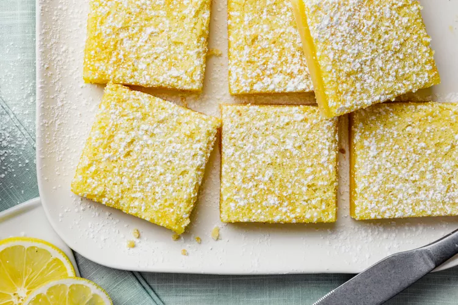

Lemon Bars

How to Make Lemon Bars
These simple and easy to make lemon bars are delicious and perfect for a party or a summer dessert!
Ingredients:
Crust:
- 2 cups all-purpose flour
- 1 cup butter, softened
- 1/2 cup white sugar
Filling:
- 1 1/2 cups white sugar
- 1/4 cup all-purpose flour
- 4 eggs
- 2 lemons, juiced
Steps:
- Preheat the oven to 350 degrees F (175 degrees C).
- To make the crust: Blend 2 cups flour, softened butter, and 1/2 cup sugar in a medium bowl until well combined; press into the bottom of an ungreased 9x13-inch pan.
- Bake in the preheated oven until firm and golden, about 15 minutes. Meanwhile, make the filling: Whisk remaining 1 1/2 cups sugar and 1/4 cup flour in a medium bowl. Whisk in eggs, then lemon juice until smooth; pour filling over the baked crust.
- Bake in the preheated oven for 20 minutes. Set the pan aside to cool completely; the bars will firm up as they cool. When cooled, cut into uniform squares.
Home